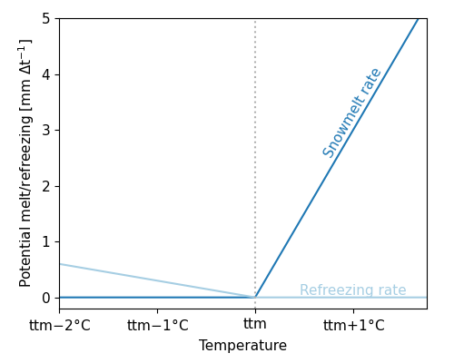

Shared processes
Snow and glaciers
Snow modelling
If the air temperature, $T_a$, is below a user-defined threshold tt ($\degree$C) precipitation occurs as snowfall, whereas it occurs as rainfall if $Ta ≥ tt$. A another parameter tti defines how precipitation can occur partly as rain of snowfall (see the figure below). If precipitation occurs as snowfall, it is added to the dry snow component within the snow pack. Otherwise it ends up in the free water reservoir, which represents the liquid water content of the snow pack. Between the two components of the snow pack, interactions take place, either through snow melt (if temperatures are above a threshold tt) or through snow refreezing (if temperatures are below threshold tt.
The respective rates of snow melt and refreezing are:
\[Q_m = cfmax(T_a−tt)\, ;\,T_a > tt \\~\\ Q_r=cfmax \, cfr(tt−T_a)\,;\, Ta < tt\]
where $Q_m$ is the rate of snow melt, $Q_r$ is the rate of snow refreezing, and $cfmax$ and $cfr$ are user defined model parameters (the melting factor [mm/($\degree$C day)] and the refreezing factor respectively).
The fraction of liquid water in the snow pack is at most equal to a user defined fraction, whc, of the water equivalent of the dry snow content. If the liquid water concentration exceeds whc, either through snow melt or incoming rainfall, the surplus water (rainfall) becomes available for infiltration into the soil:
snowwater = snowwater - refreezing # free water content in snow
maxsnowwater = snow * whc # max water in the snow
snowwater = snowwater + snowmelt + rainfall # add all water and potentially supersaturate the snowpack
rainfall = max(snowwater - maxsnowwater, 0.0) # rain + surplus snowwater

Snowmelt and refreezing rates as a function of temperature (for set melting and refreezing factors)
Glacier modelling
Glacier processes can be modelled if the snow model is enabled. For the vertical HBV concept snow modelling is not optional. Glacier modelling is very close to snow modelling and considers two main processes: glacier build-up from snow turning into firn/ice (using the HBV-light model) and glacier melt (using a temperature degree-day model).
The definition of glacier boundaries and initial volume is defined in three parameters. glacierfrac is a parameter that gives the fraction of each grid cell covered by a glacier as a number between zero and one. glacierstore is a state parameter that gives the amount of water (in mm w.e.) within the glaciers at each gridcell. Because the glacier store (glacierstore) cannot be initialized by running the model for a couple of years, a default initial state should be supplied by adding this parameter to the input static file. The required glacier data can be prepared from available glacier datasets.
First, a fixed fraction of the snowpack on top of the glacier is converted into ice for each timestep and added to the glacierstore using the HBV-light model (Seibert et al., 2018). This fraction g_sifrac typically ranges from 0.001 to 0.006.
Then, when the snowpack on top of the glacier is almost all melted (snow cover < 10 mm), glacier melt is enabled and estimated with a degree-day model. If the air temperature, $T_a$, is below a certain threshold g_tt ($\degree$C) precipitation occurs as snowfall, whereas it occurs as rainfall if $T_a ≥$ g_tt.
With this the rate of glacier melt in mm is estimated as:
\[Q_m = g\_cfmax(T_a − g\_tt)\, ; \, T_a > g\_tt\]
where $Q_m$ is the rate of glacier melt and $g\_cfmax$ is the melting factor in mm/($\degree$C day). Parameter g_tt can be taken as equal to the snow tt parameter. Values of the melting factor g_cfmax normally varies from one glacier to another and some values are reported in the literature. g_cfmax can also be estimated by multiplying snow cfmax by a factor between 1 and 2, to take into account the higher albedo of ice compared to snow.
Rainfall interception
Both the Gash and Rutter models are available to estimate rainfall interception by the vegetation. The selection of an interception model depends on the simulation timestep.
The analytical (Gash) model
The analytical model of rainfall interception is based on Rutter’s numerical model. The simplifications that introduced allow the model to be applied on a daily basis, although a storm-based approach will yield better results in situations with more than one storm per day. The amount of water needed to completely saturate the canopy is defined as:
\[P'=\frac{-\overline{R}S}{\overline{E}_{w}}ln\left[1-\frac{\overline{E}_{w}}{\overline{R}}(1-p-p_{t})^{-1}\right]\]
where $\overline{R}$ is the average precipitation intensity on a saturated canopy and $\overline{E}_{w}$ the average evaporation from the wet canopy and with the vegetation parameters $S$, $p$ and $p_t$ as defined previously. The model uses a series of expressions to calculate the interception loss during different phases of a storm. An analytical integration of the total evaporation and rainfall under saturated canopy conditions is then done for each storm to determine average values of $\overline{E}_{w}$ and $\overline{R}$. The total evaporation from the canopy (the total interception loss) is calculated as the sum of the components listed in the table below. Interception losses from the stems are calculated for days with $P\geq S_{t}/p_{t}$. $p_t$ and $S_t$ are small and neglected.
Table: Formulation of the components of interception loss according to Gash:
| Components | Interception loss |
|---|---|
| For $m$ small storms ($P_{g}<{P'}_{g}$) | $(1-p-p_{t})\sum_{j=1}^{m}P_{g,j}$ |
| Wetting up the canopy in $n$ large storms ($P_{g}\geq{P'}_{g}$) | $n(1-p-p_{t}){P'}_{g}-nS$ |
| Evaporation from saturated canopy during rainfall | $\overline{E}/\overline{R}\sum_{j=1}^{n}(P_{g,j}-{P'}_{g})$ |
| Evaporation after rainfall ceases for $n$ large storms | $nS$ |
| Evaporation from trunks in $q$ storms that fill the trunk storage | $qS_{t}$ |
| Evaporation from trunks in $m+n-q$ storms that do not fill the trunk storage | $p_{t}\sum_{j=1}^{m+n-q}P_{g,j}$ |
In applying the analytical model, saturated conditions are assumed to occur when the hourly rainfall exceeds a certain threshold. Often a threshold of 0.5 mm/hr is used. $\overline{R}$ is calculated for all hours when the rainfall exceeds the threshold to give an estimate of the mean rainfall rate onto a saturated canopy.
Gash (1979) has shown that in a regression of interception loss on rainfall (on a storm basis) the regression coefficient should equal to $\overline{E}_w/\overline{R}$. Assuming that neither $\overline{E}_w$ nor $\overline{R}$ vary considerably in time, $\overline{E}_w$ can be estimated in this way from $\overline{R}$ in the absence of above-canopy climatic observations. Values derived in this way generally tend to be (much) higher than those calculated with the penman-monteith equation.
The modified rutter model
For sub daily timesteps the interception is calculated using a simplification of the Rutter model. The simplified model is solved explicitly and does not take drainage from the canopy into account.
Wflow.rainfall_interception_modrut — Functionrainfall_interception_modrut(precipitation, potential_evaporation, canopystorage, canopygapfraction, cmax)Interception according to a modified Rutter model. The model is solved explicitly and there is no drainage below cmax.
Interception parameters from LAI
The SBM concept can determine the interception parameters from leaf area index (LAI) climatology. In order to switch this on you must define this cyclic parameter in the TOML file, the parameter is read from path_static, as follows:
[input]
path_forcing = "data/forcing-moselle.nc"
path_static = "data/staticmaps-moselle.nc"
cyclic = ["vertical.leaf_area_index"]Furthermore these additional parameters are required:
- Specific leaf storage (
sl[mm]) - Storage woody part of vegetation (
swood[mm]) - Extinction coefficient (
kext[-])
Here it is assumed that cmax [mm] (leaves) (canopy storage capacity for the leaves only) relates linearly with LAI (c.f. Van Dijk and Bruijnzeel 2001). This done via the sl. sl can be determined through a lookup table with land cover based on literature (Pitman 1989, Lui 1998). Next the cmax (leaves) is determined using:
\[ cmax(leaves) = sl \, LAI\]
To get to total storage (cmax) the woody part of the vegetation also needs to be added. As for sl, the storage of the woody part swood can also be related to land cover (lookup table).
The canopy gap fraction is determined using the extinction coefficient kext (van Dijk and Bruijnzeel 2001):
\[ canopygapfraction = exp(-kext \, LAI)\]
The extinction coefficient kext can be related to land cover.
References
- Seibert, J., Vis, M. J. P., Kohn, I., Weiler, M., and Stahl, K., 2018, Technical note: Representing glacier geometry changes in a semi-distributed hydrological model, Hydrol. Earth Syst. Sci., 22, 2211–2224, https://doi.org/10.5194/hess-22-2211-2018.